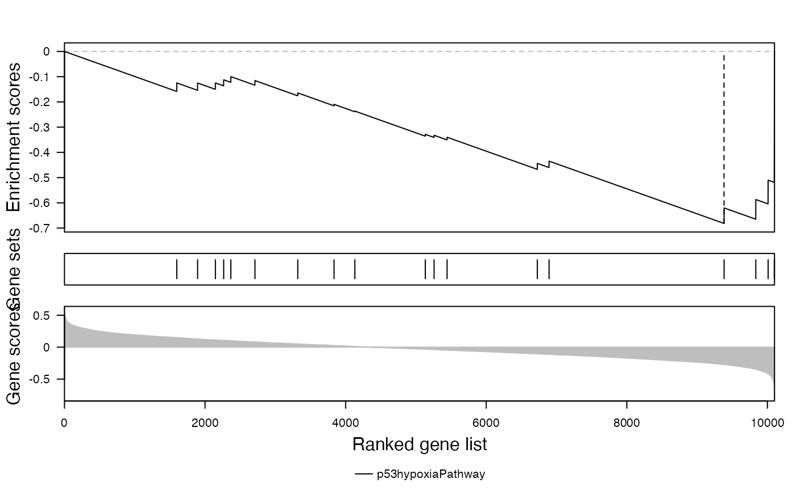
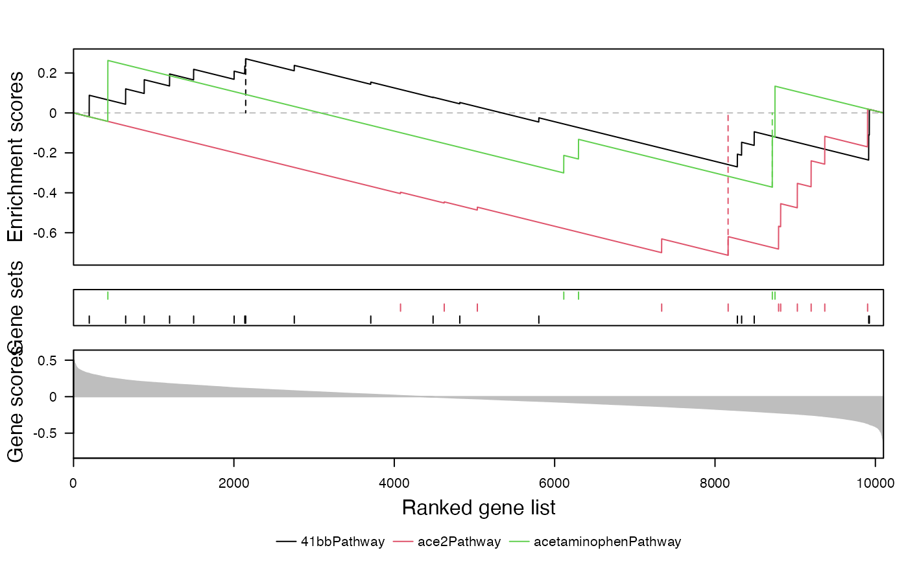

GSEA plot
Arguments
- s
A numeric vector of gene scores with gene IDs as names.
- which
Which gene sets to draw. Multiple gene sets are allowed. The value can be integer indices or names in
gs.- gs
A list of gene sets. Genes should have the same gene ID type as in
s.- col
Colors.
- panel_height
Relative height of the three panels in the plot.
Examples
data(p53_dataset)
s = p53_dataset$s2n
gs = p53_dataset$gs
gsea_plot(s, "p53hypoxiaPathway", gs)

gsea_plot(s, 1:3, gs)
